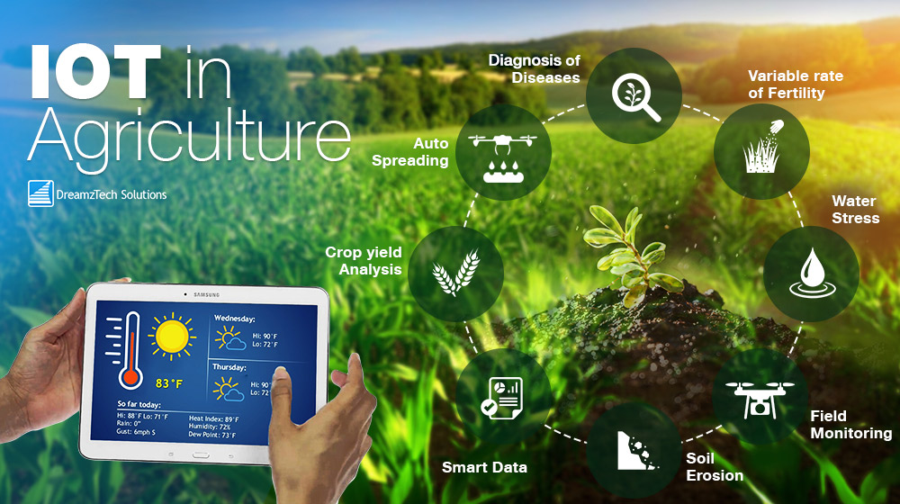

Internet of Things in agriculture

The Internet of Things (IoT) is about making “dumb” things “smart” by connecting them to each other and to the internet. It enables physical objects to be sensed and controlled remotely, creating opportunities for more direct integration between the physical world and computer-based systems.
IoT enables devices embedded with sensors to connect to and interact with each other via the internet. Devices can be remotely monitored and controlled in real time, and can include anything from pumps, sheds and tractors to weather stations and computers.
Watch our short video to learn more about the Internet of Things in agriculture.
Digital technology such as the Internet of Things is driving change in agriculture.
So, what is the Internet of Things and what does it mean for farmers?
The Internet of Things or IOT refers to devices or things that are embedded with a sensor so they can measure and transmit data via a network. Devices can mean anything from pumps sheds and tractors to weather stations.
Essentially, IOT means these physical devices can send and receive information via the Internet.
On farms, IOT allows devices across a farm to measure all kinds of data remotely and provide this information to the farmer in real time. IOT devices can gather information like soil moisture, chemical application, dam levels and livestock health - as well as monitor fences vehicles and weather.
Information generated by IOT devices allows farmers to track farm operations and performance, make better informed decisions to improve farm productivity in yield, and respond more quickly to their conditions saving time and money.
It's putting the data behind the all-important farmer gut instinct. Whether that be knowing when to check on water supply to a trough, how much fertilizer to apply to a crop, and which ewe to check during lambing.
The Victorian Government is committed to driving the uptake of digital technology including IOT in agriculture.
To support this, Agriculture Victoria is rolling out a 12 million dollar on-farm Internet of Things trial. The trial is part of the government's plan to increase digital connectivity and usability in regional Victoria.
IOT infrastructure is being set up in four trial regions to enable farmers in sheep, cropping, dairy and horticulture to work with technology providers to investigate how IOT technology can benefit farmers.
The trial will test the on-farm impact of IOT, support Victorian farms to become IOT enabled, and help place Victorian farmers at the forefront of the digital agriculture revolution.
Are you ready to investigate the next frontier of Agriculture?
Find out how you can get involved at agriculture dot vic dot gov dot au forward slash digital AG.
What are the opportunities?
IoT is about the power of data. Our world is digitally connected and data is a critical asset.
Data from devices can guide farmers’ decisions, helping them farm smarter and safer and adapt more quickly to changing conditions.
The ability to monitor farm conditions and infrastructure remotely can free up time, labour and capital to invest, allowing farmers to focus on other things.
Connecting physical resources on farms to the internet promotes:
- remote monitoring of farm conditions and infrastructure, saving time and labour on routine farm checks
- improving producers’ decision making through data analytics
- faster and quicker insights from real-time data across the value-chain, helping farmers respond to what the market wants
- efficiency in how we produce food to ensure less wastage, expediency to market, and enhanced traceability to demonstrate safe and sustainable food to our customers
- building the capabilities to respond to new and emerging technologies and investing in research and development to contribute to ongoing innovation and improved productivity.
Case study: New irrigation system for Shepparton East orchard
In 2015, Maurice Silverstein decided to upgrade his irrigation system on his apple and pear orchard at Shepparton East to an automated drip system.
This system allows him to access real time soil moisture readings from sensors across the orchard. This system, which also involved a shift from sprays to drip irrigation, has resulted in more efficient and less water usage.
The system also alerts him to problems in the system, such as blockages or leaks and can be controlled by an app on his phone. He can now respond more quickly than if relying on field inspections alone.
Maurice says he can pretty much manage his irrigation system from anywhere so long as he has internet coverage and, while he needs to be close at hand to fix any problems, he now has greater flexibility in how he manages his orchard.
This system has allowed Maurice to be more efficient with his time and water.
See also: IOT Agriculture